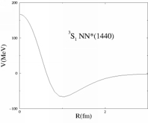

|
[ Home
| About
| Professional
| Links
| Photos
] |
Intro |
Baryon-Baryon Interactions.
Several times in physics
elementary structures have been discovered not to be so
elementary but being composites of more microscopic objects.
This happened, for instance, with the discovery of atoms and
molecules as being the elementary pieces from which gases and
liquids were made. Another quite important case is the
discovery of electrons, protons and neutrons as being the
building pieces of all the matter known at the
begining of past century. Now protons and neutrons, nucleons, are believe to be made up of quarks as well as the crazy amount of particles that were discovered during the second half of past century. With this new elementary particles it is of main importance to be able to understand the behavior of their composites, and their interactions. From this point of view strong interactions, the interaction that bounds toghether protons and neutrons to form nuclei, is nothing more than a remnant of the interactions between quarks as Van der Waals forces are remnant of the interctions between atoms. In the literature there are two main methods that are used in order to calculate baryon-baryon interactions from the microscopics quark-quark intereactions: - Resonant Group Method This method proposes a way of obtaning a dynamical equation for the movement of the intercluster variable. Was first proposed to study interactions between tritium. - Born-Oppenheimer Approximation This is a direct aplication of the standar BO approximation to the problem of six quarks clustered in groups of 3, two baryons. The main withdraw is that no fluctuations of the center of mass motion of the system are considered. |
Bibliography |
|
Links |
|
Papers |
|